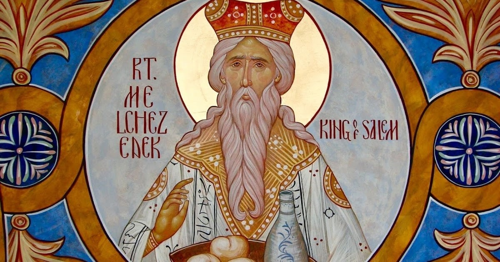
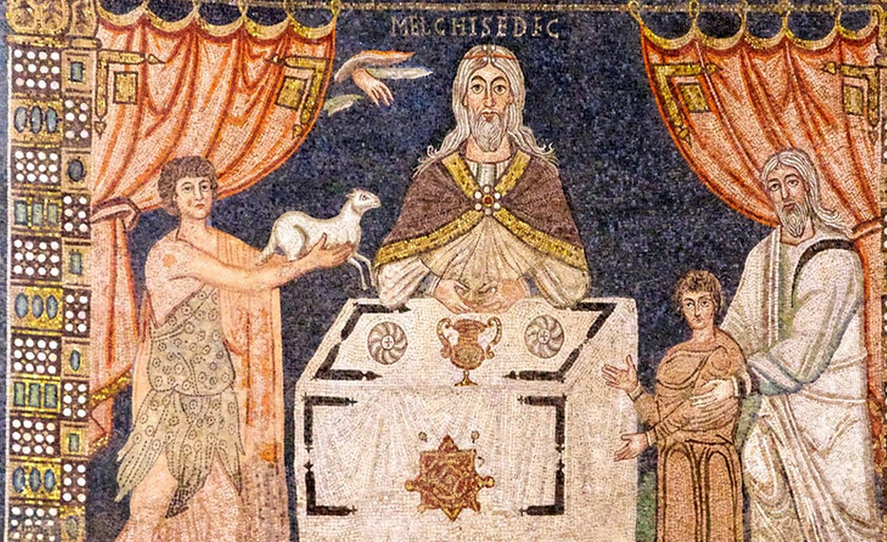
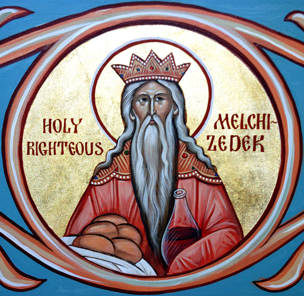
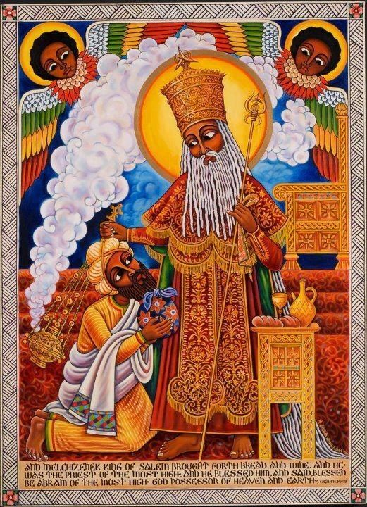
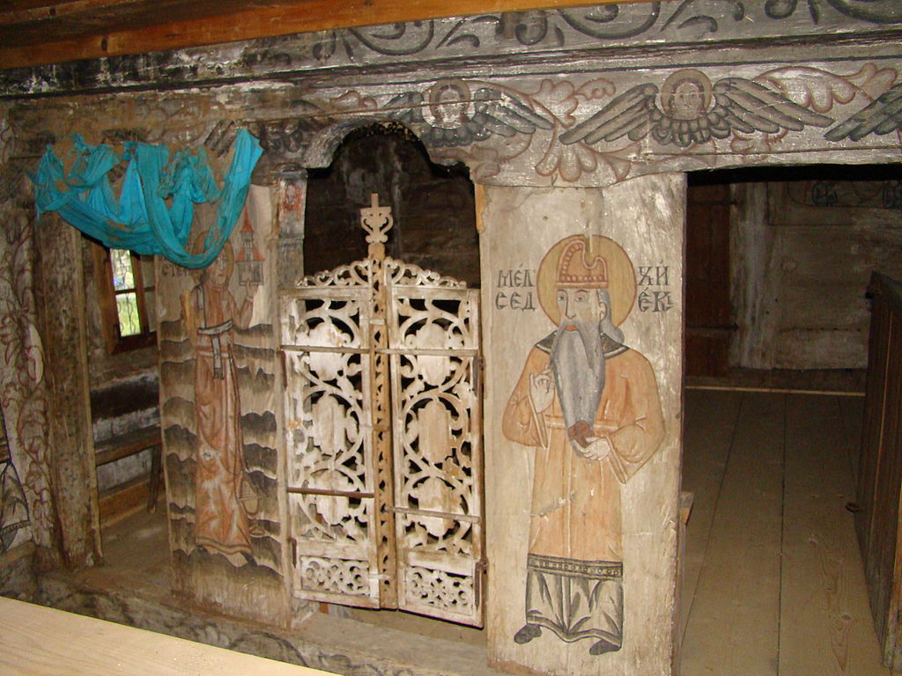
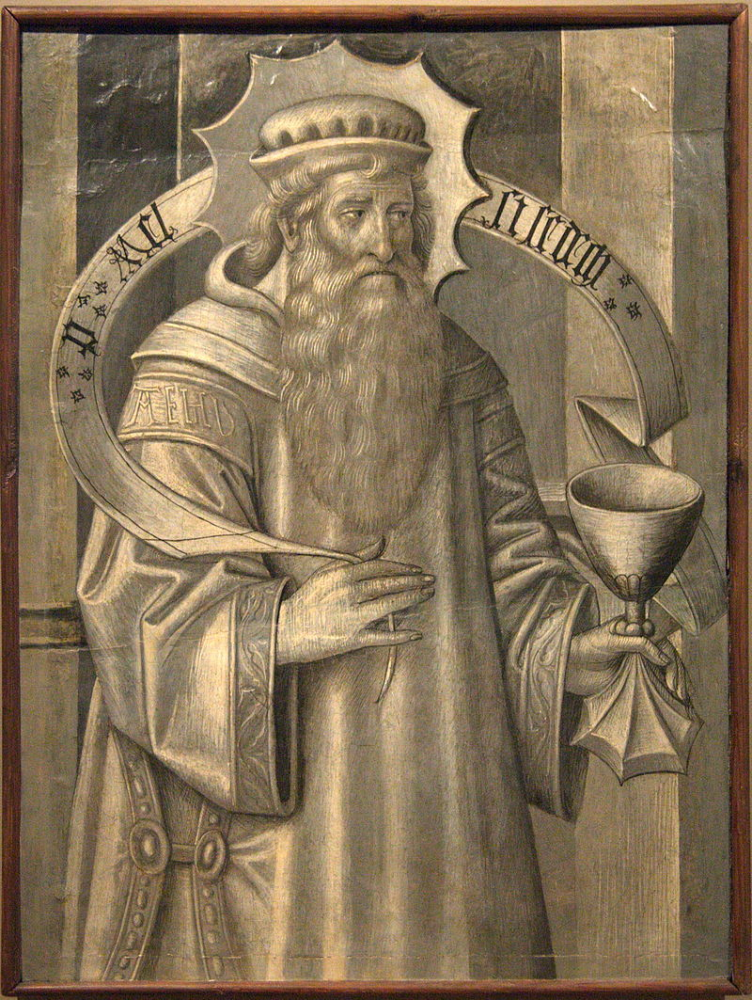

A Lenda de Melquisedeque
Prefácio
Melquisedeque é uma figura enigmática e misteriosa que aparece na Bíblia, mencionado pela primeira vez no livro do Gênesis (14:18-20). Ele é descrito como o "rei de Salém" e "sacerdote do Deus Altíssimo", que abençoou Abraão após sua vitória sobre quatro reis. Melquisedeque é uma figura singular, tanto no Judaísmo quanto no Cristianismo, e sua lenda carrega significados profundos que atravessam séculos de interpretação esotérica e mística.
Aparições Bíblicas
• Gênesis 14:18-20: Melquisedeque aparece pela primeira vez quando Abraão, após derrotar os reis que haviam capturado seu sobrinho Ló, é recebido por Melquisedeque, que lhe oferece pão e vinho e o abençoa em nome do Deus Altíssimo. Abraão, em reconhecimento da autoridade espiritual de Melquisedeque, dá-lhe o dízimo de tudo.
• Salmo 110:4: O salmo, considerado messiânico, diz: "Tu és sacerdote para sempre, segundo a ordem de Melquisedeque." Este versículo é amplamente interpretado pelos cristãos como uma profecia messiânica, sugerindo que o Messias teria um sacerdócio eterno como o de Melquisedeque.
• Epístola aos Hebreus: No Novo Testamento, o autor de Hebreus faz uma extensa reflexão sobre Melquisedeque, afirmando que ele é uma figura que prefigura Jesus Cristo, cujo sacerdócio é considerado eterno e superior ao sacerdócio levítico. Melquisedeque é descrito como "sem pai, sem mãe, sem genealogia, não tendo princípio de dias nem fim de vida, mas feito semelhante ao Filho de Deus" (Hebreus 7:3).
Significado Esotérico e Místico
Melquisedeque é cercado de mistério, especialmente porque sua origem, genealogia e destino final são desconhecidos. Ele é frequentemente associado a conceitos esotéricos de eternidade e sacerdócio celestial. No esoterismo cristão e judaico, Melquisedeque é visto como uma manifestação do sacerdócio divino que transcende a ordem terrestre.
• Sacerdócio Eterno: A ordem de Melquisedeque é considerada um sacerdócio eterno e universal, diferente do sacerdócio levítico que dependia da linhagem e era limitado ao povo de Israel. Melquisedeque simboliza um sacerdócio que abrange toda a humanidade, conectando-a diretamente com o divino.
• Associação com Jesus Cristo: No Cristianismo, Melquisedeque é frequentemente associado a Jesus Cristo, que é visto como o "Sumo Sacerdote" segundo a ordem de Melquisedeque. Esse paralelo é utilizado para enfatizar a natureza eterna e divina do sacerdócio de Cristo, superior à antiga aliança.
• Misticismo Judaico: No misticismo judaico, particularmente na Cabala, Melquisedeque é às vezes identificado com Shem, o filho de Noé, e é visto como um canal de bênçãos divinas. Ele também é associado ao conceito de justiça e paz, simbolizado por seu nome: "Melek" (rei) e "Zedek" (justiça).
Uma imagem de Melquisedeque pintada na lateral do altar perto das Portas Reais na igreja de madeira de Libotin, condado de Maramureș, Romênia Interpretações Posteriores
Diversas tradições esotéricas, incluindo o Rosacrucianismo e a Maçonaria, têm suas próprias interpretações sobre Melquisedeque. Na Maçonaria, por exemplo, ele é visto como um grande iniciador e mestre dos mistérios ocultos, sendo uma figura que representa a sabedoria e a liderança espiritual.
Reflexão
A lenda de Melquisedeque ressoa profundamente em várias tradições religiosas e esotéricas, destacando-o como um símbolo de sacerdócio eterno, justiça e conexão direta com o divino. Sua história enigmática continua a inspirar místicos e estudiosos, que veem em Melquisedeque não apenas uma figura histórica, mas um arquétipo espiritual que transcende o tempo e a cultura.